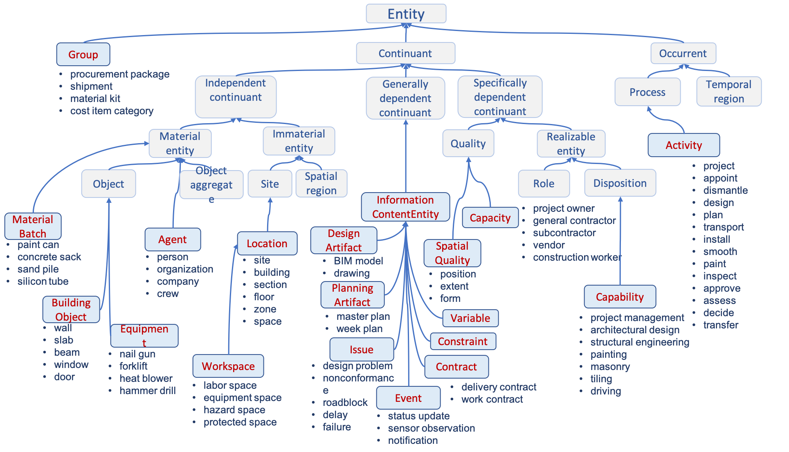

Construction processes deal with a range of different kinds of entities: building objects, materials, equipment, locations, BIM models, drawings, agents, activities, capabilities and so on. These are organized with respect to the fundamental categories of BFO as shown in the following diagram.
| DICE | <https://w3id.org/digitalconstruction/Entities#> |
| variables | <https://w3id.org/digitalconstruction/Variables> |
| owl | <http://www.w3.org/2002/07/owl> |
| xsd | <http://www.w3.org/2001/XMLSchema> |
| rdfs | <http://www.w3.org/2000/01/rdf-schema> |
| contexts | <https://w3id.org/digitalconstruction/Contexts> |
| 2-0 | <http://purl.obolibrary.org/obo/bfo/2.0> |
| rdf | <http://www.w3.org/1999/02/22-rdf-syntax-ns> |
| terms | <http://purl.org/dc/terms> |
| vann | <http://purl.org/vocab/vann> |
| digitalconstruction | <https://w3id.org/digitalconstruction> |
| obo | <http://purl.obolibrary.org/obo> |
| prov | <http://www.w3.org/ns/prov> |
| foaf | <http://xmlns.com/foaf/0.1> |
| default namespace | <https://w3id.org/digitalconstruction/Entities> |
| dc | <http://purl.org/dc/elements/1.1> |